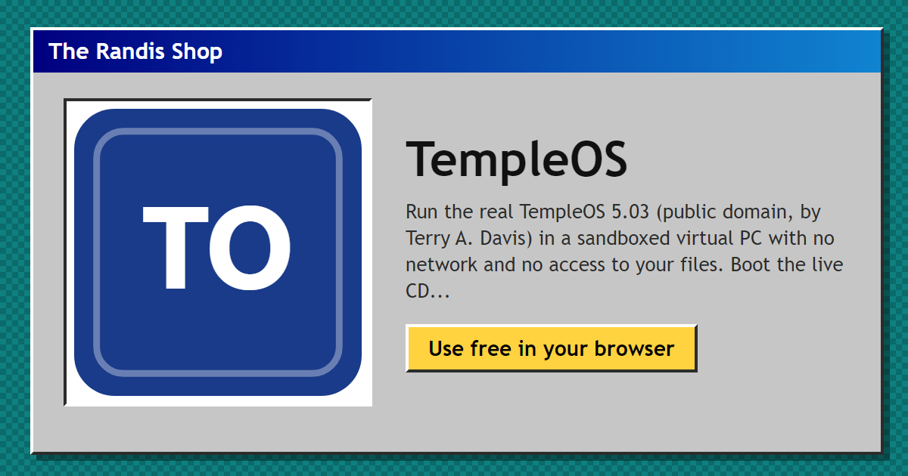

TempleOS

Run the real TempleOS 5.03 (public domain, by Terry A. Davis) in a sandboxed virtual PC with no network and no access to your files. Boot the live CD or install to the tab's own small virtual drive. The virtual PC runs in Randis UDS (it uses QEMU).
Made with Randis UDS, a free desktop app that builds the tools you describe.